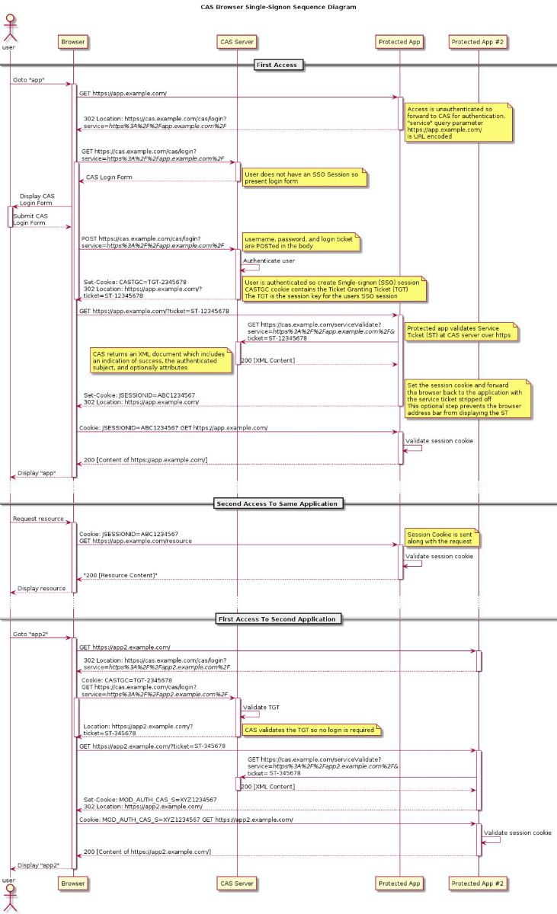
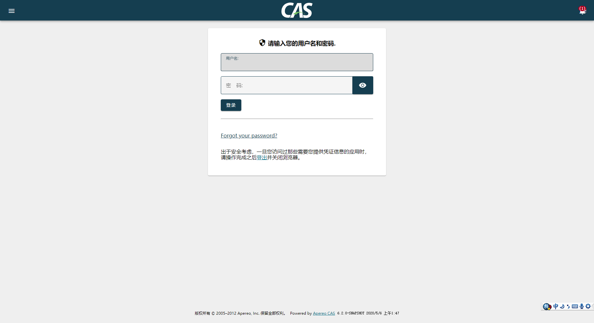
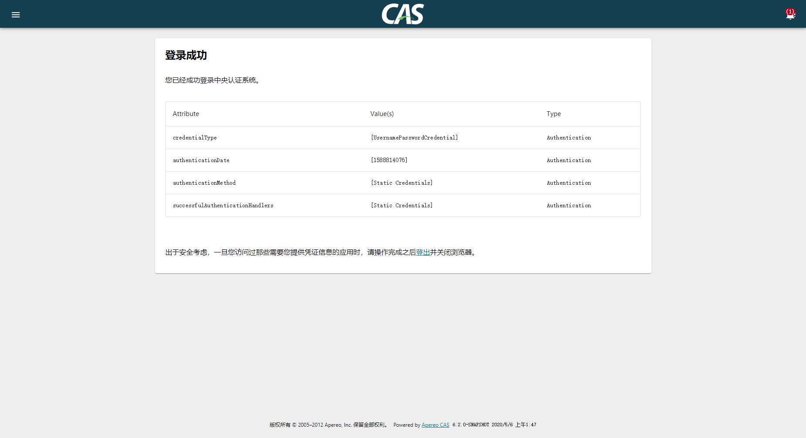

<!DOCTYPE html>


  <html class="dark page-post">


<head><meta name="generator" content="Hexo 3.9.0">
  <meta charset="utf-8">
  
  <title>使用cas-overlay-template搭建CAS服务 | 如是我闻</title>

  <meta name="viewport" content="width=device-width, initial-scale=1, maximum-scale=1">

  
    <meta name="keywords" content="CAS,SSO,">
  

  <meta name="description" content="概述#  单点登录的英文名称为Single Sign-On，简写为SSO，它是一个用户认证的过程，允许用户一次性进行认证之后，就访问系统中不同的应用；而不需要访问每个应用时，都重新输入密码。  用户第一次访问受保护的应用，将会重定向到cas登录页面 用户输入用户名和密码，cas server 认证用户创建sso session,并生成TGT和改客户端的服务票据（ST） 应用拿着ST到 CAS 服务">
<meta name="keywords" content="CAS,SSO">
<meta property="og:type" content="article">
<meta property="og:title" content="使用cas-overlay-template搭建CAS服务">
<meta property="og:url" content="https://pkaq.org/2020/05/07/cas-overlay-template/index.html">
<meta property="og:site_name" content="如是我闻">
<meta property="og:description" content="概述#  单点登录的英文名称为Single Sign-On，简写为SSO，它是一个用户认证的过程，允许用户一次性进行认证之后，就访问系统中不同的应用；而不需要访问每个应用时，都重新输入密码。  用户第一次访问受保护的应用，将会重定向到cas登录页面 用户输入用户名和密码，cas server 认证用户创建sso session,并生成TGT和改客户端的服务票据（ST） 应用拿着ST到 CAS 服务">
<meta property="og:locale" content="default">
<meta property="og:image" content="https://pkaq.org/2020/05/07/cas-overlay-template/0.jpg">
<meta property="og:image" content="https://pkaq.org/2020/05/07/cas-overlay-template/1.png">
<meta property="og:image" content="https://pkaq.org/2020/05/07/cas-overlay-template/2.png">
<meta property="og:updated_time" content="2020-05-07T01:34:20.628Z">
<meta name="twitter:card" content="summary">
<meta name="twitter:title" content="使用cas-overlay-template搭建CAS服务">
<meta name="twitter:description" content="概述#  单点登录的英文名称为Single Sign-On，简写为SSO，它是一个用户认证的过程，允许用户一次性进行认证之后，就访问系统中不同的应用；而不需要访问每个应用时，都重新输入密码。  用户第一次访问受保护的应用，将会重定向到cas登录页面 用户输入用户名和密码，cas server 认证用户创建sso session,并生成TGT和改客户端的服务票据（ST） 应用拿着ST到 CAS 服务">
<meta name="twitter:image" content="https://pkaq.org/2020/05/07/cas-overlay-template/0.jpg">

  

  
    <link rel="icon" href="/favicon.ico">
  

  <link href="/css/styles.css?v=d671a41f" rel="stylesheet">


  
    <link rel="stylesheet" href="/css/fexo-theme.css">
  

  

  
  <script type="text/javascript">
    var _hmt = _hmt || [];
    (function() {
      var hm = document.createElement("script");
      hm.src = "//hm.baidu.com/hm.js?cd1f06c6f057506d537ab11e9f1693be";
      var s = document.getElementsByTagName("script")[0];
      s.parentNode.insertBefore(hm, s);
    })();
  </script>


  
    <script async src="https://dn-lbstatics.qbox.me/busuanzi/2.3/busuanzi.pure.mini.js"></script>
  

  
    <link rel="stylesheet" href="//cdn.bootcss.com/font-awesome/4.3.0/css/font-awesome.min.css">
  

  <link href="//cdn.webfont.youziku.com/webfonts/nomal/97080/42410/5865c4e5f629db00cc915895.css" rel="stylesheet" type="text/css">
 
</head>
</html>
<body>


  
    <span id="toolbox-mobile" class="toolbox-mobile">　</span>
  

  <div class="post-header CENTER">
   
  <div class="toolbox">
    <a class="toolbox-entry" href="/">
      <span class="toolbox-entry-text">　</span>
      <i class="icon-angle-down"></i>
      <i class="icon-home"></i>
    </a>
    <ul class="list-toolbox">
      
        <li class="item-toolbox">
          <a
            class="CIRCLE toolbox_color_0"
            href="/archives/"
            rel="noopener noreferrer"
            target="_self"
            >
            博客
          </a>
        </li>
      
        <li class="item-toolbox">
          <a
            class="CIRCLE toolbox_color_1"
            href="/category/"
            rel="noopener noreferrer"
            target="_self"
            >
            分类
          </a>
        </li>
      
        <li class="item-toolbox">
          <a
            class="CIRCLE toolbox_color_2"
            href="/tag/"
            rel="noopener noreferrer"
            target="_self"
            >
            标签
          </a>
        </li>
      
        <li class="item-toolbox">
          <a
            class="CIRCLE toolbox_color_3"
            href="/link/"
            rel="noopener noreferrer"
            target="_self"
            >
            友链
          </a>
        </li>
      
        <li class="item-toolbox">
          <a
            class="CIRCLE toolbox_color_4"
            href="/atom.xml"
            rel="noopener noreferrer"
            target="_blank"
            >
            RSS
          </a>
        </li>
      
        <li class="item-toolbox">
          <a
            class="CIRCLE toolbox_color_5"
            href="/search/"
            rel="noopener noreferrer"
            target="_self"
            >
            搜索
          </a>
        </li>
      
    </ul>
  </div>


</div>


  <div id="toc" class="toc-article">
    <strong class="toc-title">文章目录</strong>
    <ol class="toc"><li class="toc-item toc-level-1"><a class="toc-link" href="#null"><span class="toc-text">概述#</span></a></li><li class="toc-item toc-level-1"><a class="toc-link" href="#null"><span class="toc-text">快速开始#</span></a></li></ol>
  </div>


<div class="content content-post CENTER">
   <article id="post-cas-overlay-template" class="article article-type-post" itemprop="blogPost">
  <header class="article-header">
    <h1 class="post-title">使用cas-overlay-template搭建CAS服务</h1>

    <div class="article-meta">
      <span>
        <i class="icon-calendar"></i>
        <span>2020.05.07</span>
      </span>

      
        <span class="article-author">
          <i class="icon-user"></i>
          <span>PKAQ</span>
        </span>
      

      
  <span class="article-category">
    <i class="icon-list"></i>
    <a class="article-category-link" href="/categories/SSO/">SSO</a>
  </span>


      

      
      <i class="fa fa-eye"></i> 
        <span id="busuanzi_container_page_pv">
           &nbsp热度 <span id="busuanzi_value_page_pv">
           <i class="fa fa-spinner fa-spin"></i></span>℃
        </span>
      

      
        <i class="icon-comment"></i> 
        共 <a class="ds-thread-count" id="uyan_count_unit" su="使用cas-overlay-template搭建CAS服务" href="https://pkaq.org/2020/05/07/cas-overlay-template/index.html"></a>
      
      
    </div>
  </header>

  <div class="article-content">
    
      <h1><span id="gai-shu">概述</span><a href="#gai-shu" class="header-anchor">#</a></h1><p>  单点登录的英文名称为Single Sign-On，简写为SSO，它是一个用户认证的过程，允许用户一次性进行认证之后，就访问系统中不同的应用；而不需要访问每个应用时，都重新输入密码。</p>
<ul>
<li>用户第一次访问受保护的应用，将会重定向到cas登录页面</li>
<li>用户输入用户名和密码，cas server 认证用户创建sso session,并生成TGT和改客户端的服务票据（ST）</li>
<li>应用拿着ST到 CAS 服务验证ST,验证通过后设置session和cookie返回浏览器</li>
<li>用户浏览器携带cookie访问，应用验证后返回内容</li>
<li>访问第二个cas client 应用，此时cookie中有TGT但是没有ST，应用要求去CAS 服务获取ST,cas 服务验证TGT并生成一个ST</li>
<li>客户端携带ST访问应用，应用服务区Cas server 验证ticket,验证成功后设置session,cookie,重定向到应用服务地址<br>展示第二个应用的内容</li>
</ul>
<p></p>
<h1><span id="kuai-su-kai-shi">快速开始</span><a href="#kuai-su-kai-shi" class="header-anchor">#</a></h1><p>git clone <a href="https://github.com/apereo/cas-overlay-template.git" target="_blank" rel="noopener">https://github.com/apereo/cas-overlay-template.git</a></p>
<p>执行./gradlew.bat clean build  第一次构建比较慢，耐心等待<br>./gradlew.bat explodeWar 解压<br>此时将会在bulid目录下生成一个cas-resources 文件夹，我们把里面的文件全部拷贝到src/main/resources,将\etc\cas\thekeystore 也拷贝到该目录下</p>
<p>更改配置application.properties    server.ssl.key-store=classpath:thekeystore </p>
<p>./gradlew.bat run 将cas运行在内嵌的 Embedded Tomcat 中</p>
<p>启动完成后浏览器中打开 <a href="https://localhost:8443/cas/login" target="_blank" rel="noopener">https://localhost:8443/cas/login</a> </p>
<p></p>
<p>此时我们的cas已经部署成功 在登录也面输入用户名和密码 casuser Mellon ,出现下面界面表明cas已经部署成功</p>
<p></p>
<link href="/css/prism-dark.css" rel="stylesheet">
    
  </div>
</article>

</div>


  <div class="text-center donation">
    <div class="inner-donation">
      <span class="btn-donation">支持一下</span>
      <div class="donation-body">
        <div class="tip text-center">您得支持,是我前进的动力.</div>
        <ul class="theme.donation.items.length">
        
          <li class="item">
            
          </li>
        
        </ul>
      </div>
    </div>
  </div>


  <a id="backTop" class="back-top">
    <i class="icon-angle-up"></i>
  </a>


  <div class="modal" id="modal">
  <span id="cover" class="cover hide"></span>
  <div id="modal-dialog" class="modal-dialog hide-dialog">
    <div class="modal-header">
      <span id="close" class="btn-close">关闭</span>
    </div>
    <hr>
    <div class="modal-body">
      <ul class="list-toolbox">
        
          <li class="item-toolbox">
            <a
              class="CIRCLE"
              href="/archives/"
              rel="noopener noreferrer"
              target="_self"
              >
              博客
            </a>
          </li>
        
          <li class="item-toolbox">
            <a
              class="CIRCLE"
              href="/category/"
              rel="noopener noreferrer"
              target="_self"
              >
              分类
            </a>
          </li>
        
          <li class="item-toolbox">
            <a
              class="CIRCLE"
              href="/tag/"
              rel="noopener noreferrer"
              target="_self"
              >
              标签
            </a>
          </li>
        
          <li class="item-toolbox">
            <a
              class="CIRCLE"
              href="/link/"
              rel="noopener noreferrer"
              target="_self"
              >
              友链
            </a>
          </li>
        
          <li class="item-toolbox">
            <a
              class="CIRCLE"
              href="/atom.xml"
              rel="noopener noreferrer"
              target="_blank"
              >
              RSS
            </a>
          </li>
        
          <li class="item-toolbox">
            <a
              class="CIRCLE"
              href="/search/"
              rel="noopener noreferrer"
              target="_self"
              >
              搜索
            </a>
          </li>
        
      </ul>

    </div>
  </div>
</div>


  
      <div class="fexo-comments comments-post">
    

    
  <section class="duoshuo-comments">

    <!-- UY BEGIN -->
    <div id="uyan_frame"></div>
    <script async type="text/javascript" src="http://v2.uyan.cc/code/uyan.js?uid=2144561">
    <!-- UY END -->
  </section>

  <script type="text/javascript">
	var uyan_config = {
	     'su':"使用cas-overlay-template搭建CAS服务" 
	};
	</script>


  </div>

  

  <script type="text/javascript">
  function loadScript(url, callback) {
    var script = document.createElement('script')
    script.type = 'text/javascript';

    if (script.readyState) { //IE
      script.onreadystatechange = function() {
        if (script.readyState == 'loaded' ||
          script.readyState == 'complete') {
          script.onreadystatechange = null;
          callback();
        }
      };
    } else { //Others
      script.onload = function() {
        callback();
      };
    }

    script.src = url;
    document.getElementsByTagName('head')[0].appendChild(script);
  }

  window.onload = function() {
    loadScript('/js/bundle.js?235683', function() {
      // load success
    });
  }
</script>

<script src="/live2dw/lib/L2Dwidget.min.js?094cbace49a39548bed64abff5988b05"></script><script>L2Dwidget.init({"pluginRootPath":"live2dw/","pluginJsPath":"lib/","pluginModelPath":"assets/","tagMode":false,"debug":false,"model":{"jsonPath":"/live2dw/assets/assets/hijiki.model.json"},"display":{"position":"right","width":150,"height":300},"mobile":{"show":true},"log":false});</script></body>
</html>
